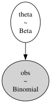

Usare JAX per un campionamento più veloce#
In precedenza, abbiamo utilizzato il campionatore predefinito fornito da PyMC. Tuttavia, esiste un’alternativa più efficiente che utilizza l’algoritmo NUTS (No-U-Turn Sampler) implementato con la libreria JAX. Questo campionatore è noto per la sua capacità di eseguire il campionamento in modo più veloce e efficiente. Per utilizzare queste opzione, è possibile seguire la procedura descritta in questo capitolo.
Prima di procedere, è necessario installare JAX e le librerie associate. Poiché NumPyro è una libreria che dipende da JAX, si può installare con il seguente comando Conda nell’ambiente virtuale dove abbiamo installato PyMC:
conda install -c conda-forge jax
conda install -c conda-forge numpyro
Dopo aver completato l’installazione, è possibile importare il modulo per il campionamento basato su JAX:
import pymc.sampling_jax
Con questi passaggi, è possibile utilizzare il campionatore basato su JAX per effettuare analisi più rapide ed efficienti.
Preparazione del Notebook#
import numpy as np
import matplotlib.pyplot as plt
import pymc as pm
import jax
import pymc.sampling_jax
import scipy.stats as stats
import seaborn as sns
import arviz as az
import warnings
warnings.filterwarnings("ignore", category=UserWarning)
warnings.filterwarnings("ignore", category=FutureWarning)
warnings.filterwarnings("ignore", category=Warning)
/Users/corrado/opt/anaconda3/envs/pymc_env/lib/python3.11/site-packages/tqdm/auto.py:21: TqdmWarning: IProgress not found. Please update jupyter and ipywidgets. See https://ipywidgets.readthedocs.io/en/stable/user_install.html
from .autonotebook import tqdm as notebook_tqdm
%config InlineBackend.figure_format = 'retina'
# Initialize random number generator
RANDOM_SEED = 8927
rng = np.random.default_rng(RANDOM_SEED)
az.style.use("arviz-darkgrid")
sns.set_theme(palette="colorblind")
# We can control the number cores that are used by an environment variable:
import os
import multiprocessing
num_cores = multiprocessing.cpu_count()
os.environ["RAYON_NUM_THREADS"] = str(num_cores)
Applicazioni#
Per fare un esempio pratico, consideriamo nuovamente i dati relativi agli artisti della Generazione X nel MOMA. Ricordiamo che i dati corrispondono a 14 successi su 100 prove. Come in precedenza, imposteremo sul parametro \(\theta\) (probabilità di appartenere alla Generazione X o successive) una distribuzione Beta(4, 6). Il modello, dunque, si presenta come:
# Dati
y = 14
ntrials = 100
# Distribuzione a priori
alpha_prior = 4
beta_prior = 6
Definire il modello#
Il modello PyMC viene specificato esattamente come abbiamo fatto in precedenza.
model = pm.Model()
with model:
# Prior
theta = pm.Beta("theta", alpha=alpha_prior, beta=beta_prior)
# Likelihood
obs = pm.Binomial("obs", p=theta, n=ntrials, observed=y)
pm.model_to_graphviz(model)

Esecuzione del campionamento#
In precedenza, per il campionamento abbiamo usato la funzione pm.sample().
%%time
with model:
idata1 = pm.sample()
Show code cell output
Auto-assigning NUTS sampler...
Initializing NUTS using jitter+adapt_diag...
Multiprocess sampling (4 chains in 4 jobs)
NUTS: [theta]
---------------------------------------------------------------------------
KeyboardInterrupt Traceback (most recent call last)
File <timed exec>:2
File ~/opt/anaconda3/envs/pymc_env/lib/python3.11/site-packages/pymc/sampling/mcmc.py:795, in sample(draws, tune, chains, cores, random_seed, progressbar, step, nuts_sampler, initvals, init, jitter_max_retries, n_init, trace, discard_tuned_samples, compute_convergence_checks, keep_warning_stat, return_inferencedata, idata_kwargs, nuts_sampler_kwargs, callback, mp_ctx, model, **kwargs)
793 _print_step_hierarchy(step)
794 try:
--> 795 _mp_sample(**sample_args, **parallel_args)
796 except pickle.PickleError:
797 _log.warning("Could not pickle model, sampling singlethreaded.")
File ~/opt/anaconda3/envs/pymc_env/lib/python3.11/site-packages/pymc/sampling/mcmc.py:1170, in _mp_sample(draws, tune, step, chains, cores, random_seed, start, progressbar, traces, model, callback, mp_ctx, **kwargs)
1167 # We did draws += tune in pm.sample
1168 draws -= tune
-> 1170 sampler = ps.ParallelSampler(
1171 draws=draws,
1172 tune=tune,
1173 chains=chains,
1174 cores=cores,
1175 seeds=random_seed,
1176 start_points=start,
1177 step_method=step,
1178 progressbar=progressbar,
1179 mp_ctx=mp_ctx,
1180 )
1181 try:
1182 try:
File ~/opt/anaconda3/envs/pymc_env/lib/python3.11/site-packages/pymc/sampling/parallel.py:402, in ParallelSampler.__init__(self, draws, tune, chains, cores, seeds, start_points, step_method, progressbar, mp_ctx)
399 if mp_ctx.get_start_method() != "fork":
400 step_method_pickled = cloudpickle.dumps(step_method, protocol=-1)
--> 402 self._samplers = [
403 ProcessAdapter(
404 draws,
405 tune,
406 step_method,
407 step_method_pickled,
408 chain,
409 seed,
410 start,
411 mp_ctx,
412 )
413 for chain, seed, start in zip(range(chains), seeds, start_points)
414 ]
416 self._inactive = self._samplers.copy()
417 self._finished: list[ProcessAdapter] = []
File ~/opt/anaconda3/envs/pymc_env/lib/python3.11/site-packages/pymc/sampling/parallel.py:403, in <listcomp>(.0)
399 if mp_ctx.get_start_method() != "fork":
400 step_method_pickled = cloudpickle.dumps(step_method, protocol=-1)
402 self._samplers = [
--> 403 ProcessAdapter(
404 draws,
405 tune,
406 step_method,
407 step_method_pickled,
408 chain,
409 seed,
410 start,
411 mp_ctx,
412 )
413 for chain, seed, start in zip(range(chains), seeds, start_points)
414 ]
416 self._inactive = self._samplers.copy()
417 self._finished: list[ProcessAdapter] = []
File ~/opt/anaconda3/envs/pymc_env/lib/python3.11/site-packages/pymc/sampling/parallel.py:259, in ProcessAdapter.__init__(self, draws, tune, step_method, step_method_pickled, chain, seed, start, mp_ctx)
242 step_method_send = step_method
244 self._process = mp_ctx.Process(
245 daemon=True,
246 name=process_name,
(...)
257 ),
258 )
--> 259 self._process.start()
260 # Close the remote pipe, so that we get notified if the other
261 # end is closed.
262 remote_conn.close()
File ~/opt/anaconda3/envs/pymc_env/lib/python3.11/multiprocessing/process.py:121, in BaseProcess.start(self)
118 assert not _current_process._config.get('daemon'), \
119 'daemonic processes are not allowed to have children'
120 _cleanup()
--> 121 self._popen = self._Popen(self)
122 self._sentinel = self._popen.sentinel
123 # Avoid a refcycle if the target function holds an indirect
124 # reference to the process object (see bpo-30775)
File ~/opt/anaconda3/envs/pymc_env/lib/python3.11/multiprocessing/context.py:300, in ForkServerProcess._Popen(process_obj)
297 @staticmethod
298 def _Popen(process_obj):
299 from .popen_forkserver import Popen
--> 300 return Popen(process_obj)
File ~/opt/anaconda3/envs/pymc_env/lib/python3.11/multiprocessing/popen_forkserver.py:35, in Popen.__init__(self, process_obj)
33 def __init__(self, process_obj):
34 self._fds = []
---> 35 super().__init__(process_obj)
File ~/opt/anaconda3/envs/pymc_env/lib/python3.11/multiprocessing/popen_fork.py:19, in Popen.__init__(self, process_obj)
17 self.returncode = None
18 self.finalizer = None
---> 19 self._launch(process_obj)
File ~/opt/anaconda3/envs/pymc_env/lib/python3.11/multiprocessing/popen_forkserver.py:58, in Popen._launch(self, process_obj)
55 self.finalizer = util.Finalize(self, util.close_fds,
56 (_parent_w, self.sentinel))
57 with open(w, 'wb', closefd=True) as f:
---> 58 f.write(buf.getbuffer())
59 self.pid = forkserver.read_signed(self.sentinel)
KeyboardInterrupt:
Sul mio computer questo richiede circa 40 s.
Ripetiamo ora il campionamento, facendo ricorso al campionatore JAX. Per quel che riguarda il codice, useremo l’istruzione pm.sampling_jax.sample_numpyro_nuts().
with model:
idata2 = pm.sampling_jax.sample_numpyro_nuts()
Show code cell output
Compiling...
Compilation time = 0:00:00.410759
Sampling...
Compiling.. : 0%| | 0/2000 [00:00<?, ?it/s]
Running chain 0: 0%| | 0/2000 [00:01<?, ?it/s]
Running chain 0: 100%|██████████| 2000/2000 [00:01<00:00, 1620.33it/s]
Running chain 1: 100%|██████████| 2000/2000 [00:01<00:00, 1621.41it/s]
Running chain 2: 100%|██████████| 2000/2000 [00:01<00:00, 1622.91it/s]
Running chain 3: 100%|██████████| 2000/2000 [00:01<00:00, 1624.12it/s]
Sampling time = 0:00:01.521274
Transforming variables...
Transformation time = 0:00:00.064573
Si osservi che, nel caso in esame, il processo di campionamento ha impiegato solamente 2 secondi. Sebbene questa accelerazione possa sembrare trascurabile per modelli di semplice costruzione, assume un’importanza significativa quando si tratta di modelli più complessi. In scenari in cui il campionamento può richiedere ore di elaborazione, una diminuzione anche solo del 50% del tempo necessario può avere un impatto considerevole dal punto di vista pratico.
Una volta ottenuto l’oggetto idata, questo può essere manipolato come abbiamo fatto in precedenza. Per esempio, per produrre la traccia e la distribuzione a posteriori di \(\theta\) chiamiamo az.plot_trace().
_ = az.plot_trace(idata2)

Per un sommario della distribuzione a posteriori usiamo az.summary().
az.summary(idata2)
| mean | sd | hdi_3% | hdi_97% | mcse_mean | mcse_sd | ess_bulk | ess_tail | r_hat | |
|---|---|---|---|---|---|---|---|---|---|
| theta | 0.163 | 0.035 | 0.101 | 0.231 | 0.001 | 0.001 | 1444.0 | 1823.0 | 1.0 |
Commenti e considerazioni finali#
L’implementazione di JAX rappresenta un notevole progresso nel processo di campionamento di PyMC, offrendo soluzioni più veloci ed efficienti rispetto ai metodi convenzionali. La capacità di accelerare le operazioni di campionamento da parte di JAX consente una maggiore agilità nell’analisi, riducendo i tempi di attesa e agevolando l’esplorazione di modelli più complessi. Inoltre, l’integrazione fluida con PyMC rende questi vantaggi accessibili senza richiedere modifiche al codice esistente.
Watermark#
%load_ext watermark
%watermark -n -u -v -iv -w -p jax -m
Last updated: Thu Feb 22 2024
Python implementation: CPython
Python version : 3.11.7
IPython version : 8.21.0
jax: 0.4.23
Compiler : Clang 16.0.6
OS : Darwin
Release : 23.3.0
Machine : x86_64
Processor : i386
CPU cores : 8
Architecture: 64bit
matplotlib: 3.8.2
seaborn : 0.13.2
jax : 0.4.23
scipy : 1.12.0
pymc : 5.10.4
arviz : 0.17.0
numpy : 1.26.4
Watermark: 2.4.3